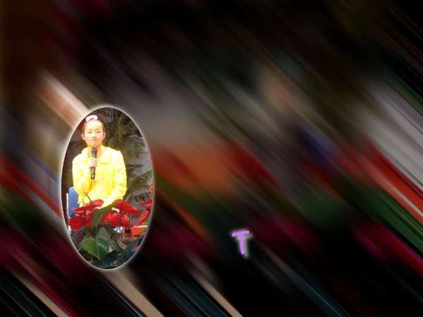

2011-2012 第二学期八年级图像处理教学设计
作者：TeliuTe 来源：基础教程网
十八、学会使用滤镜 返回目录 下一课
（一）教学设计
1、学习目标：学会使用滤镜
2、注意事项：选定一个好的效果
3、教学过程：
1）教师准备学案和板书；
2）学生整队进入，开机抄黑板上笔记；
3）教师讲解板书演示操作；
4）学生打指法、日志、完成操作；
5）教师打勾记录学生指法成绩，检查日志和操作；
注：学生抄完笔记就开始打指法、日志，老师讲完后再继续完成；
（二）板书设计(学生笔记)
第18课 学会使用滤镜
1、复制图像，创建自剪贴板
2、椭圆选区，反转（背景）
3、“滤镜、模糊、动态模糊”
4、选择、反转（前景）调整亮度
5、“滤镜、光源和阴影、投影”，两次
6、另存 xcf、jpg
操作图示：

（三）课后记
本来想着用浮雕效果，可是试了试没找到方法
然后在滤镜里挨着尝试，选择模糊和投影
--
内容还是上节课的突出重点选区
只是效果用滤镜要更好一些
--
写了满满一黑板，把操作过程记录下来
这样学生碰到不会的可以按照步骤来对比
--
绕弯比较多，来回切换菜单
选区和反转，投影的正负
--
不用讲太快，重点的地方罗嗦些也没事
接嘴的要训，但不用要生气的训，学的快也是好事
--
把容易出错的地方多重复几遍，其他学生也会听上一点
除了把选区做成投影，还要把签名做成投影
--
因为选区有个选择，有些同学会把签名也选一下
或者是没新增图层，出现签名加不上效果
--
投影的时候，X、Y有个正负，正着是右上，负的是左下
这是设置影子的位置，需要绕个弯
--
模糊如果超过30就会产生动态的运动效果
编辑里的撤消Ctrl+Z有机会就提醒下
--
投影的颜色选个淡色的彩色，根据背景的反差来选择，
让学生自己构思下，给出参考的值然后自己设置看预览
--
返回目录 下一课
本教程由86团学校TeliuTe制作|著作权所有
基础教程网：http://teliute.org/
美丽的校园……
转载和引用本站内容，请保留版权信息和本站链接。